Sykepeleier-oppgaver
➡️ Elink
Sjekke epikriser, svare på innleggelserapporter, henvendelser fra fastleger/ sykehus o.l.
➡️ Tiltaksplaner
Oppdater tiltaksplaner der det er aktuelt. Gå gjennom brukere du er TA for og gjør evt. endringer
➡️ Kommunikasjon
Pasientnett, epikriser/journal/medisingylle sjekkes daglig. Gamle epikriser skannes i Gerica. Be om opplæring hvis du ikke er kjent med det.
➡️ Medisinrom
Ta ut A og B preparater til neste dag, gå gjennom utstyr og sårutstyr og skriv opp på liste om noe mangler, rydde narkoskap og send tilbake gamle medisiner
➡️ OL-beskjedjournal
Se gjennom OL beskjeder for å danne en oversikt
➡️ Rapporter og praktiske oppgaver
Gjennomgang av aktuelle problemstillinger fra rapport. Utføre praktiske oppgaver knyttet til dette
➡️ Multidoseimport
Fullfør Multidoseimport hver torsdag i multidose uker
➡️ Medisinering
Legg inn medisinendringer for aktuelle brukere på Gerica
- Klikk på aktivitet
- Klikk på arbeidsplanlegging
- Velg rapport
- Deretter arbeidslister per ansatt
- Ansatt: Mulighet for å kunne skrive ut arbeidslister for en gitt ansatt eller rute. Trykk F4 i verdifeltet og søk opp ansatt. Hvis det skal skrives ut arbeidslister på flere ansatte eller ruter, så fylles ikke feltet ut
- Nivå:
- Type tjeneste:høreklikk eller trykk på F4 for å søke opp i nivåetre
- Fra/til dato: Datoen du skal skrive ut lister for.
- Hent frem ansattes navn ved å høyreklikke i ansattfeltet og husk og skriv etternavn først. Deretter er det viktig å skrive dato for arbeidslisten. Dersom ansatt jobber dobbelvakt må du skrive inn klokkeslett for å unngå en hel arbeidsliste for hele dagen. Helt til slutt må du taste ikon for skriver øverst til venstre.
- Hvis det skrives ut arbeidslister for flere ansatte eller ruter, så vil oppdragene i aktuell periode komme opp som er fordelt på ansatte/rute
- Fra/Til klokke/utført: Sett inn tidspunkt. Oppdrag som starter innen for gitt kl.slett blir med
- Bachnr: Evnt. sett inn sats/bach nummer(kun per tjenestetype)
- Tast ikon for skriver slik at du får ut arbeidslisten.


- Klikk på brukeroversikt i gerica
- Finn riktig bruker
- klikk på journal
- Klikk på "Ny
- Velg journaltype 7, og trykk på tab
- Høyrklikk på tjeneste, velg hjemmesykepleien
- Sett inn riktig dato og klokkeslett
- Sett inn tiltak: trykk på "ny" - høyreklikk på tiltakstype- finn riktig tiltak-legg inn tid


- Klikk på aktivitiet- øverst i siden
- i feltet "tjeneste", ser du bare tallet 3 som er hjemmesykepleien, velg høyreklikk på feltet for å få alle tjenestene opp
- Velg: hjemmesykepleie(tjeneste 3), praktisk bistand(tjeneste 4) og avklaring og mestring(tjeneste 15?)
- Velg dato og om du vil se på dag eller kvelds-ruter. 0730-15 eller 15-22
- Klikk på ok og oppdater siden ved å klikke på oppdater-knappen
- Nå ser du alle ruter og besøkene per rute for valgt dato
- Velg og høyreklikk på ansattes navn
- Navnet til alle ansatte som er på jobb, kommer opp
- velg riktig ansatt og flytt alle besøk
- Hvis du skal velge en ansatt som ikke har arbeidsliste: velg en "annen ansatt" og da kan du skrive etternavnet til den ansatte, besøkene skal flyttes til
- ***Viktig*** Ikke glem å velge alle tjenestene som skal bli med, DVS nr 3, 4 og 15


- Klikk på journal-ikonet øverst på siden
- Et nytt vindu åpner seg, klikk på printer-ikonet
- Skroll ned i det nye vinduet som åpner seg
- Velg ol-Rapport-hjemmesykepleie Ny(dobbelklikk på den)
- velg nivå: dobbelklikk i feltet nivå, høyreklikk og velg hjemmesykepleie team Sør
- Velg Fra/Til dato
- Klikk på printer-ikonet
- Vent til journalene kommer på skjermen, det kan ta noen sekunder
- Klikk på printer. Riktig printer er printix-anywhere


- Klikk på brukeroversikt i gerica. Finn og velg brukers navn
- Klikk på tjeneste
- Klikk på tiltak og deretter "ny"
- Velg riktig tiltak
- velg tiltaket og klikk på ny. vindu for tidsplan kommer opp
- Velg startdato, tidspunkt og rute


Velg bruker i brukeovesikt
Klikk på tiltak øverst i siden

i tiltak-vinduet, kan du ldge/sette/endre:
situasjon/tidsplan/nødvendig kompetanse/nivå/tidsestimat/antall utførere/nivå/prosedyre
på tiltakene.
Du kan også avslutte tiltak
-- Lag ny situasjon:
Klikk på "+" tegnet

Høyreklikk i feltet "situasjonstype"

Velg riktig situasjon og lagre

Velg riktig situasjon og lagre

Høyreklikk på tiltaket du vil sette situasjonen på -> Bytt situasjon

Endre prosedyre

Endre kompetanse

Endre nivå på tiltaket

Bruk "justere estimat" for å sette tidsplan på tiltaket

- Her kan du også se fremtidige genererte oppdrag

➡️Finn riktig bruker
➡️Klokk på medisin
➡️Klikk på doseringsliste kompakt

➡️Skriv ut
➡️Husk å velge riktig printer: printix anywhere
Kommer snart
Sjekk ansvarstelefon og dignio for varsler og behandle disse hver vakt. Dokumenteres i Gerica
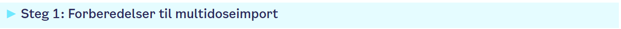
Det er stor risiko for feil ved multidoseimport, og importen bør gjennomføres av faste medarbeidere som har fått opplæring og forstår prosessen rundt multidoseimporten.
Ansvar: Sykepleier/vernepleier/farmasøyt
Bytt til riktig rolle for å kunne jobbe i multidoseimport-bildet. Følg rutine for bestilling og mottak multidose før utføring av multidoseimport: DokumentLegemiddelhåndtering - Multidose - Oppstart, bestilling, mottak og avvikling. Sett av tilstrekkelig tid til multidoseimport på et tilrettelagt sted uten forstyrrelser. Ha tilgjengelig to PC-er og eventuelt en LMP for å kontrollsjekke legemiddellisten etter import. Dette er spesielt viktig for å sjekke om legemidler som tas fast utenom multidoserull vises med riktig dose og tidsplan. Ha fysisk ordinasjonskort tilgjengelig og se på endringsrapporten for å forstå årsaken til endringene, og få et helhetlig overblikk. Sjekk om endringene samsvarer med pasientens sykehistorie og nåværende status (se steg 4).
Ny pasient med multidose - første gang det gjøres multidoseimport
Første gang det utføres multidoseimport, kan det komme en lang og uoversiktlig legemiddelliste.
Det anbefales sterkt at legemiddellsamstemming er utført, og at både fastlegen og pasienten/pårørende har bekreftet/avkreftet hvilke legemidler som er i bruk på det gjeldende tidspunktet.
Sjekk kjernejournal for å se på historikken, utstedelse av e-resepter og uthenting av legemidler som er gjort det siste året. Hyppigheten av legemidler hentet på apoteket kan gi en indikasjon, men ikke fasit, på hvordan legemidlene blir brukt (ofte/for sjeldent/ikke i det hele tatt).
Ta kontakt med fastlegen ved tvil.
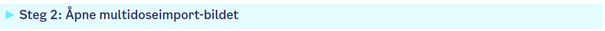
Klikk på madisin-knappen, velg Multidoseimport
Da kommer dette bildet opp (brukerbilde til venstre og legemiddeloversikt til høyre):

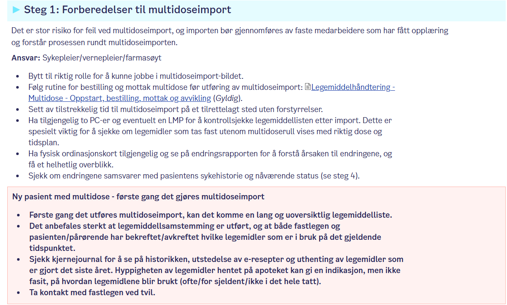
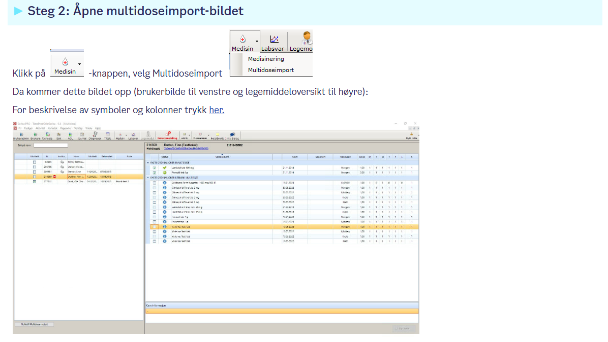
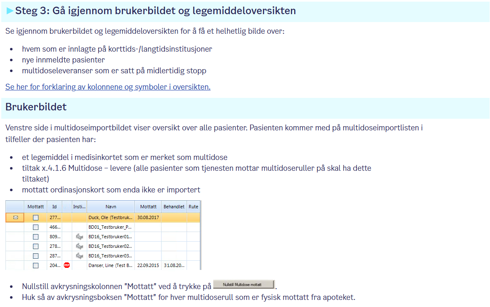
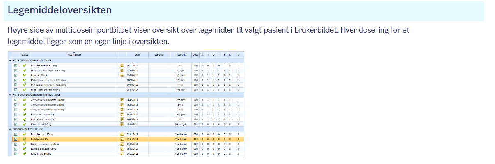
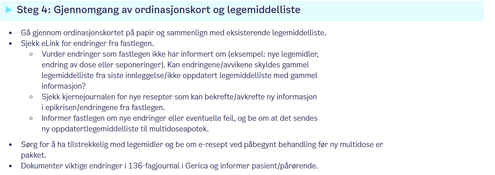
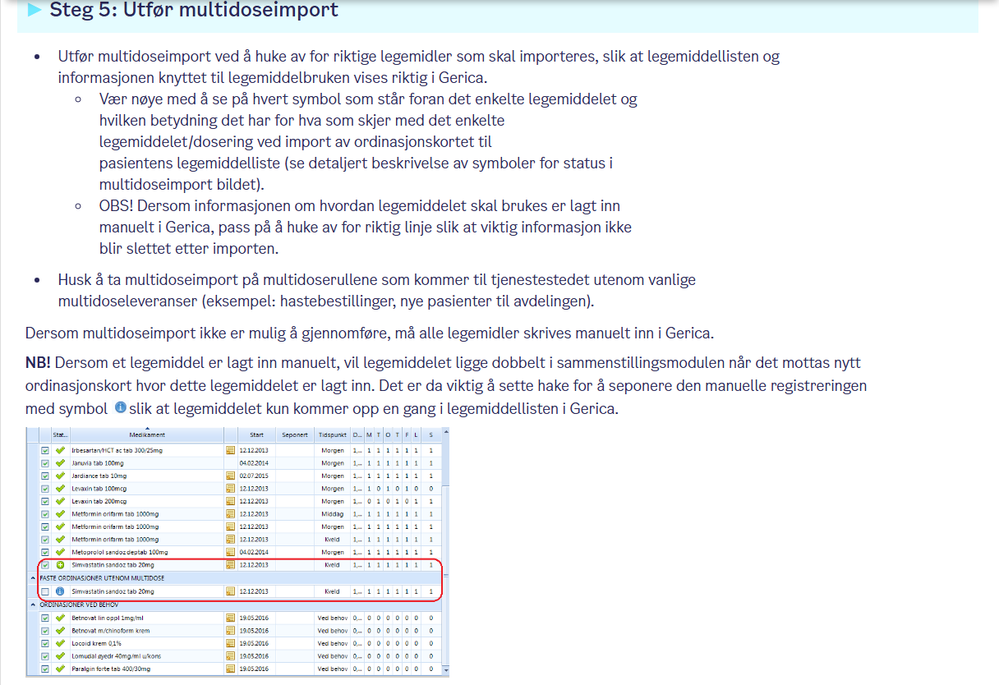
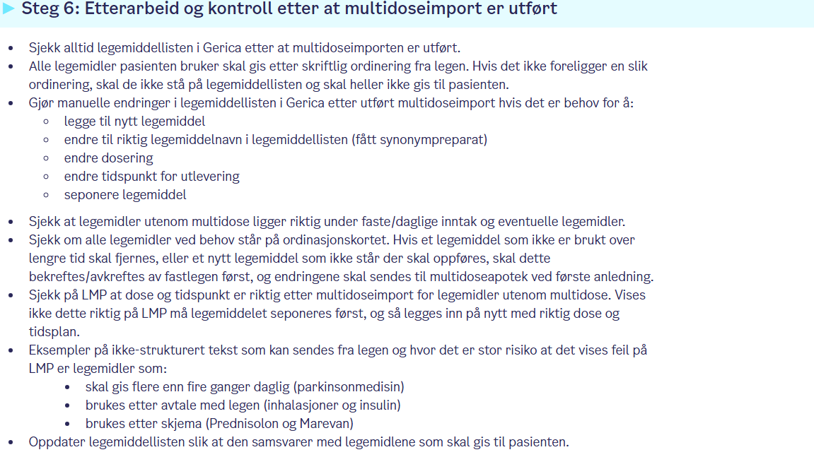
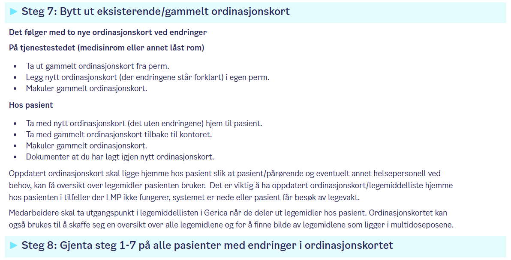
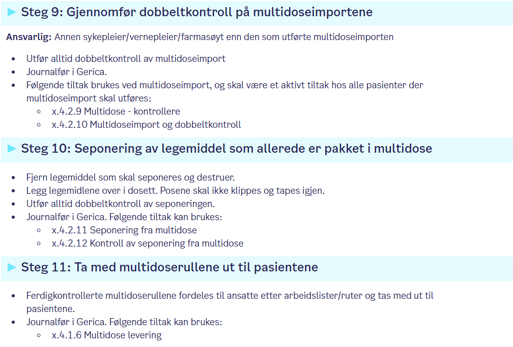